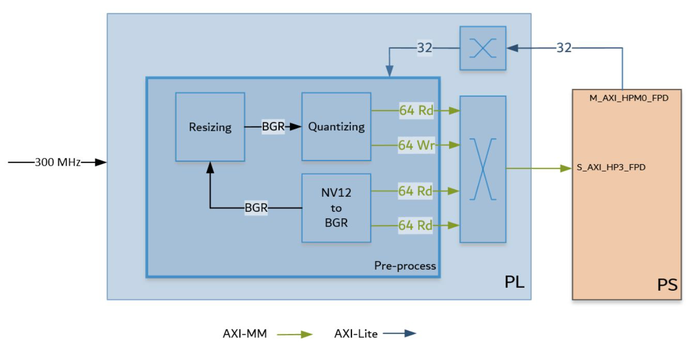
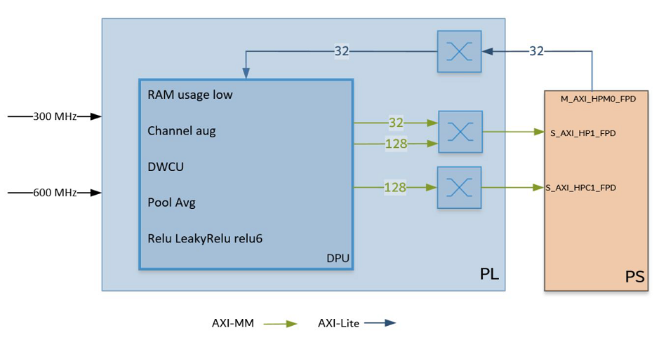

Kria™ KV260 Vision AI Starter Kit
|
Hardware Architecture of the Accelerator |
Hardware Architecture of the Accelerator¶
Pre-processing IPs and DPU¶
The Vitis™ software platform overlay includes the pre-processing IPs and DPU.
The pre-processing block as shown in the figure below includes the following functions:

Cvtcolor: Reads an NV12 video frame and converts the color format to BGR
Resizing: Scales down the original 4K/1080p frame to at most 720x720
Quantizing: Performs linear transformation (scaling and shifting) to each pixel of BGR frame to satisfy DPU input requirement
The desgin uses Vitis Vision Library functions to build the pre-processing block. The Vitis functions used are, cvtcolor, resize, and blobfromimage.
The DPU IP as shown in the figure below can be configured.

For this design, the following features should be enabled:
Channel augmentation
Depth-wise convolution
Average pooling
Relu, LeakyRelu and Relu6
URAM enable
To learn more about the DPU, please refer the PG338
Vitis integrates the pre-processing IP and DPU IP in the platform. The table below shows utilization numbers after optimization of the hardware design.
Resource usage of current design
| K26 | CLB LUTs | BRAM | DSP | URAM |
|---|---|---|---|---|
| Available | 117120 | 144 | 1248 | 64 |
| Platform | 18634 | 19.5 | 1 | 8 |
| Pre-processing | 11133 | 15 | 37 | 0 |
| DPU B3136 | 45433 | 67 | 548 | 44 |
| Other* | 2700 | 0 | 0 | 0 |
| Total | 77884 | 101.2 | 586 | 52 |
| Total % | 66.50% | 70.49% | 46.96% | 81.25% |
Other* : AXI interconnects and Interrupt concat block added by Vitis
The table below shows estimated DPU performance and overall power on the K26 chip (including 4K based pre-processing and other IPs). The DPU runs at 300MHz/600MHz.
DPU performance and power (estimated)
| TOPS (Peak) | TOPS (DenseBox)1 | Power (Overall)2 | |
|---|---|---|---|
| B3136 | 0.92 | 0.25 | 7.9W |
Note:
We use DenseBox_640x360 model to estimate the real performance of DPU, and this model has 1.1GOPs;
We can only estimate the overall power of K26 chip (including DPU and other IPs)
DPU B3136 bandwidth estimates are shown in the table below
DPU B3136 bandwidth estimates
| Operation | Peak | Average |
|---|---|---|
| Write (MB/s) | 1300 | 440 |
| Read (MB/s) | 6200 | 2600 |
Next Steps¶
References¶
Vitis Vision functions:
https://github.com/Xilinx/Vitis_Libraries/tree/master/vision/L2/examples/cvtcolor
https://github.com/Xilinx/Vitis_Libraries/tree/master/vision/L2/examples/resize
https://github.com/Xilinx/Vitis_Libraries/tree/master/vision/L3/benchmarks/blobfromimage
DPU
License¶
Licensed under the Apache License, Version 2.0 (the “License”); you may not use this file except in compliance with the License.
You may obtain a copy of the License at http://www.apache.org/licenses/LICENSE-2.0
Unless required by applicable law or agreed to in writing, software distributed under the License is distributed on an “AS IS” BASIS, WITHOUT WARRANTIES OR CONDITIONS OF ANY KIND, either express or implied. See the License for the specific language governing permissions and limitations under the License.
Copyright© 2021 Xilinx